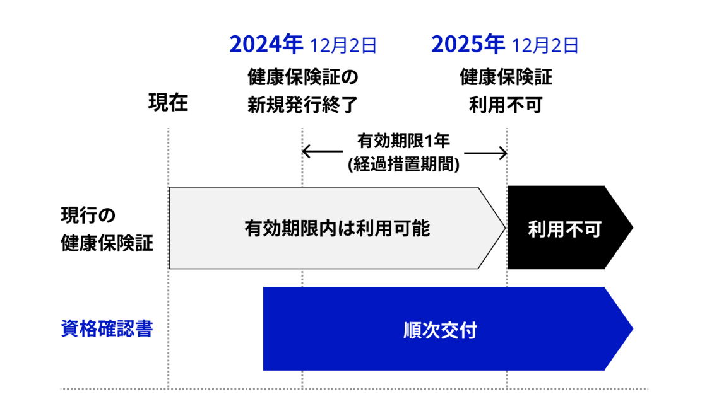

健康保険証と個人番号カード（2024-10-30 追記あり）

健康保険証を発行してくれている組織から「資格情報のお知らせ」が来た。 嗚呼，ついに来たか。
これによると 2024-12-02 以降，健康保険証の新規発行が廃止となるそうな。 今持ってる保険証は来年 2025-12-01 まで有効で，それまでに個人番号に基づく新しいシステムに移行する必要がある。
ちうわけでちょっと調べてみた。
「マイナ保険証」とは
いわゆる「マイナ保険証」は
- マイナポータル
- 医療機関窓口のカードリーダー
- セブン銀行ATM
- 市区町村の窓口
のいずれかで登録手続きを行う必要がある。
医療機関等（病院，医院・クリニック，処方箋薬局など）にかかる際は以下のいずれかの方法で資格情報の提示を行う。
- マイナ保険証（医療機関が個人番号カードのカードリーダを持っている場合）
- マイナ保険証＋マイナポータルの資格情報画面（医療機関が個人番号カードのカードリーダを持っていない場合）
- マイナ保険証＋資格情報のお知らせ（医療機関が個人番号カードのカードリーダを持っていない場合，かつマイナポータルにアクセスできない場合）
- 健康保険証（2025-12-01 まで有効）
これを見ると「資格情報のお知らせ」単独では使えなくて「マイナ保険証」（＝個人番号カード）が必須のように見える。 医療機関側もカードリーダーを持ってないと恩恵を受けられないのな。 なかなかに業の深いシステムである。
資格確認書
個人番号カードを持ってない人にも救済措置はある。 「マイナ保険証を使用することができない状況にある方については、「資格確認書」で医療機関等を受診することができます」とのこと。
「資格確認書」って何？
ふむふむ。 どうやら「資格情報のお知らせ」とは別に「資格確認書」なるものが順次送られてくるらしい。

これを提示すればOKというわけだ。 なんだ「マイナ保険証」要らんぢゃん。
個人番号カードを持ち歩きたくない
私は個人番号カードが始まる2016年早々に取得した人間である。
個人番号カードのおかげで広島から松江に引っ越した際にもスムーズにお役所手続きが終わったし，単にお役所側が楽になる（？）というだけでなく，私たち国民側にとっても利便性という意味でメリットがあるのは間違いない。
個人番号カードの問題は，身分証明としての機能と行政手続きのための認証デバイス機能が抱き合わせになっている点である2。 単に身分証明として使いたいなら現行の（ICチップ入り）自動車運転免許証と同程度の機能で十分で，そこに行政等の手続きのための電子証明書を入れる必要はない。
また行政手続きの（利便性・安全性の）ために電子証明書を使わせたいなら，それは認証デバイスとして比較的慎重な管理が必要になる。 ぶっちゃけ，ふだん持ち歩くようなものじゃないのだ。 でも持病持ちの私としては「健康保険証」は日常的に持ち歩かざるを得ないし，これを個人番号カードと抱き合わせにされるのは大変困る。
あと行政手続き等にスマホアプリを使わせるのも筋が悪い。 少なくとも日本ではスマホは同じ端末を永続的に持つようなものではなく2,3年ごとに買い換えるのが普通である。 だから，スマホ自体に機密情報はなるべく置いておきたくない。 スマホやカードは紛失・盗難リスクも高いしね。
私個人の都合を言えばパソコン（Linux 機を含む）で手続きできるようにして欲しい。 スマホ用に「スマホ用電子証明書搭載サービス」ってのがあるのなら，例えば電子証明書を Yubikey とかに入れてパソコンのブラウザから使えるようにするとかしてくれよ，と切に思う。 スマホで確定申告とかぞんぞがさばる。
というわけで
「マイナ保険証」についてはしばらく様子見で「資格確認書」が来てから方針を検討することにする。 今のところ健康保険証で何も困ってないし3，来年12月までに対応すればいいんだから，急ぐ必要はあるまい。
【おまけ】次期個人番号カード？
「次期個人番号カード」なるものが検討されているらしい。
「次期カードの導入時期は、2026年を目標とし」とか書いてあるが，私みたいに2016年早々に取得した人は来年（2025年）の誕生日までに更新しないといけないのだが？ 来年更新する人は古いデザインのまま10年待たされることになるのか？
馬鹿じゃねーの。 ホンマにデジタル庁は碌なことせんよな。 あるいは，やるんなら倍速でやれ！ お役所特有のサボタージュかましてんじゃねーよ！
あと個人番号カードの更新が10年って長すぎないか。 私なんか10年の間に10kg近くダイエットしたし，頭髪も薄くなって老け顔になっちまったんだが。 この写真で本人と確認してもらえるのか毎回不安になる。
自動車運転免許証ですら5年で更新なのに10年は長すぎるだろ。 認証デバイス機能と抱き合わせにするから，こういう不都合が起きるんだよな。
【追記 2024-10-30】「マイナ免許証」
- 「マイナ免許証」は来年3月24日スタート、閣議決定 - ケータイ Watch
- 2025年には「マイナンバーカード」と「運転免許証」が一体化!? 切り替えは“必須”なの？ メリット・デメリットも解説 | その他暮らし | ファイナンシャルフィールド
というわけで 2025-03-24 から所謂「マイナ免許証」の運用が始まるそうな。 年度末にギリギリ滑り込ませました，という雰囲気があからさまでトラブルの予感しかしない（笑） そうでなくとも年度末は進学・異動などで住民の動きが激しくなる（つまりお役所が忙しくなる）のに大丈夫なんだろうか。
運用としては「マイナ保険証」と同じく個人番号カードに自動車運転免許証のアプリケーションを追加する感じなのだろう。 といっても，健康保険証のようにこれまでの免許証が廃止になるというわけではなく，免許証は免許証でこれまで通り使えるようだ。
今見えてる情報を見る限り，ぶっちゃけ「マイナ免許証」のメリットは薄い。 住所を変更した際に免許センターに行かなくてもいい，といった程度の利便性。
そもそも個人番号カードの有効期間は10年。 対する自動車運転免許証は最長でも5年だ。 管理・利用ドメインも全く異なっていて，免許更新の際は（視力検査なども含めて）免許センターで手続きせざるを得ない。
前節でも書いたとおり，身分証明と認証デバイスが抱き合わせになっているものを日常的に持ち歩きたくない私としては「マイナ免許証」はなしかなぁ，という感じ。 まぁ，次の免許更新タイミングで考えればいいだろう。 モラトリアム万歳！
ブックマーク
参考図書

- ハッキング思考 強者はいかにしてルールを歪めるのか、それを正すにはどうしたらいいのか
- ブルース・シュナイアー (著), 高橋 聡 (翻訳)
- 日経BP 2023-10-12
- 単行本
- 4296001574 (ASIN), 9784296001576 (EAN), 4296001574 (ISBN)
- 評価
「AI時代にルールを味方につけるには、「正しいハッキングの考え方」が必要だ」（帯の言葉より）

- 暗号技術入門 第3版 秘密の国のアリス
- 結城 浩 (著)
- SBクリエイティブ 2015-08-25 (Release 2015-09-17)
- Kindle版
- B015643CPE (ASIN)
- 評価
SHA-3 や Bitcoin/Blockchain など新しい知見や技術要素を大幅追加。暗号技術を使うだけならこれ1冊でとりあえず無問題。

- セキュリティはなぜやぶられたのか
- ブルース・シュナイアー (著), 井口 耕二 (翻訳)
- 日経BP 2007-02-15
- 単行本
- 4822283100 (ASIN), 9784822283100 (EAN), 4822283100 (ISBN)
- 評価
原書のタイトルが “Beyond Fear: Thinking Sensibly About Security in an Uncertain World” なのに対して日本語タイトルがどうしようもなくヘボいが中身は名著。とりあえず読んどきなはれ。ゼロ年代当時 9.11 およびその後の米国のセキュリティ政策と深く関連している内容なので，そのへんを加味して読むとよい。
-
個人番号カードに保険証情報が格納されるわけではなく，リモートにある保険証情報にアクセスするための電子証明書がインストールされるということらしい。 ↩︎
-
更に言えば，私たち国民の側から見て複数サービスを同じ番号で統合してしまうのも問題。これをやられると個人番号は電話番号以上に外に漏らせない機微情報になってしまう。せめてお役所手続きで閉じてたらよかったんだけどねぇ。まぁ，これは個人番号カードではなく個人番号の構造的欠陥と言えるだろう。 ↩︎
-
マイナ保険証のパンフレットには「医療情報の共有化で質のよい医療が受けられます」と書いてあるが，これはあくまで医療機関や行政機関の側の話であって「患者」側には関係ない。今でも薬剤・診療情報は主治医や薬局と十分に共有できてるし，入院時の高額医療費免減手続きもケースワーカーさんにお願いすれば退院までにやってくれる。ホンマ，いつもお世話になっています。個人番号との紐付けが必要なだけなら「マイナ保険証」に拘る理由はない。 ↩︎